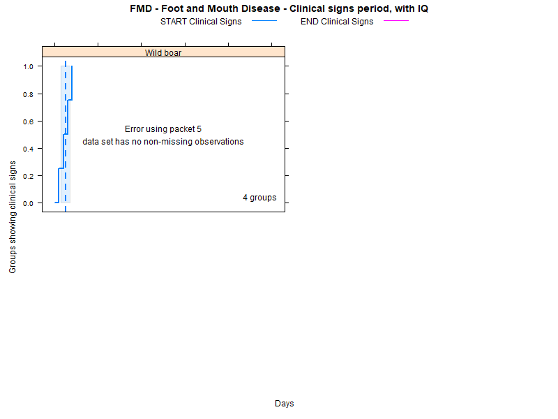

Experimental infection was demonstrated in the following animal species:
Pigs, Cattle, Sheep, Goat, Black-tailed deer, Red deer, CATTLE - Yak, Wild boar, White-tailed deer, Camel, Dromedary, Buffalo, Water Buffalo, Llama
Kaplan-Meier curves were fit to the data,in order to estimate confidence intervals (CI) and interquartile ranges (IQ) that explicitly take into account the data censoring issue (lack of information about true maximum when experiments ended while the agent was still detectable). The results are the survival curves shown below, first with confidence intervals (parametric assumption), and then with interquartile ranges (non-parametric). Further below you will find a table with the exact calculated CI and IQ.

LCL and UCL stand for the lower and upper control limit of a 95% confidence interval accounting for censoring (lack of information about true maximum when experiments ended while the agent was still detectable).
N.groups is the number of animal groups from which experimental infection data was available.
| species | parameter | n.groups | median | LCL | UCL | IQ1 | IQ3 |
|---|---|---|---|---|---|---|---|
| Cattle | START Clinical Signs | 100 | 2.0 | 2 | 2 | 1.0 | 3.0 |
| Cattle | END Clinical Signs | 100 | 10.0 | 10 | NA | 8.0 | 14.0 |
| Goat | START Clinical Signs | 13 | 3.0 | 2 | NA | 2.0 | 3.0 |
| Goat | END Clinical Signs | 13 | 6.0 | 6 | NA | 6.0 | 7.0 |
| Pigs | START Clinical Signs | 143 | 2.0 | 2 | 2 | 2.0 | 3.0 |
| Pigs | END Clinical Signs | 143 | 12.0 | 10 | NA | 8.0 | 21.0 |
| Sheep | START Clinical Signs | 37 | 2.0 | 2 | 3 | 1.0 | 3.0 |
| Sheep | END Clinical Signs | 37 | 13.0 | 10 | NA | 10.0 | 15.0 |
| Wild boar | START Clinical Signs | 4 | 2.5 | 1 | NA | 1.5 | 3.5 |
The table below details the number of groups (N.groups) for which experimental infection data was available, and gives a summary of the fatality observed within these experimentally infected groups.
For each combination of animal species and, when relevant, agent subtype, three rows of information are available:
The within group fatality, summarized for all animal groups in which the reference explicitly gave information about whether deaths were observed (or animals were euthanised due to advanced clinical signs). This therefore can include groups in which no animals died or were euthanised, as long as this information was explicitily observed and reported. The within group percentage displayed in the table is the median of all observations available (one observation = % dead within one animal group experimentally infected and followed).
the within group fatality only for groups in which mortality was observed. That is, when disease was observed to cause deathes, what was the percentage fatality within animal groups.
the number of animal groups for which no fatality information is available (the reference did not report deaths, but it was not possible to determine whether no deaths were observed, or this information was simply not reported).
| targetSpecies | death.inf | N.groups | Within group mortality |
|---|---|---|---|
| Black-tailed deer | groups with mortality information | 2 | 40% |
| Black-tailed deer | only groups with death | 2 | 40% |
| Buffalo | groups with mortality information | 1 | 0% |
| Buffalo | no mortality information | 2 | – |
| Camel | groups with mortality information | 1 | 0% |
| Cattle | groups with mortality information | 52 | 0% |
| Cattle | only groups with death | 9 | 50% |
| Cattle | no mortality information | 94 | – |
| CATTLE - Yak | groups with mortality information | 1 | 0% |
| Dromedary | groups with mortality information | 1 | 0% |
| Goat | groups with mortality information | 11 | 0% |
| Goat | no mortality information | 4 | – |
| Llama | no mortality information | 1 | – |
| Pigs | groups with mortality information | 76 | 10% |
| Pigs | only groups with death | 39 | 80% |
| Pigs | no mortality information | 100 | – |
| Red deer | no mortality information | 1 | – |
| Sheep | groups with mortality information | 21 | 0% |
| Sheep | only groups with death | 4 | 40% |
| Sheep | no mortality information | 30 | – |
| Water Buffalo | groups with mortality information | 6 | 0% |
| White-tailed deer | groups with mortality information | 1 | 50% |
| White-tailed deer | only groups with death | 1 | 50% |
| White-tailed deer | no mortality information | 2 | – |
| Wild boar | groups with mortality information | 2 | 11.1% |
| Wild boar | only groups with death | 1 | 22.2% |
| Wild boar | no mortality information | 2 | – |
In the left panel you can find information about the entire systematic literature review. The specific references for this agent, and used in this section of the story map are listed below.